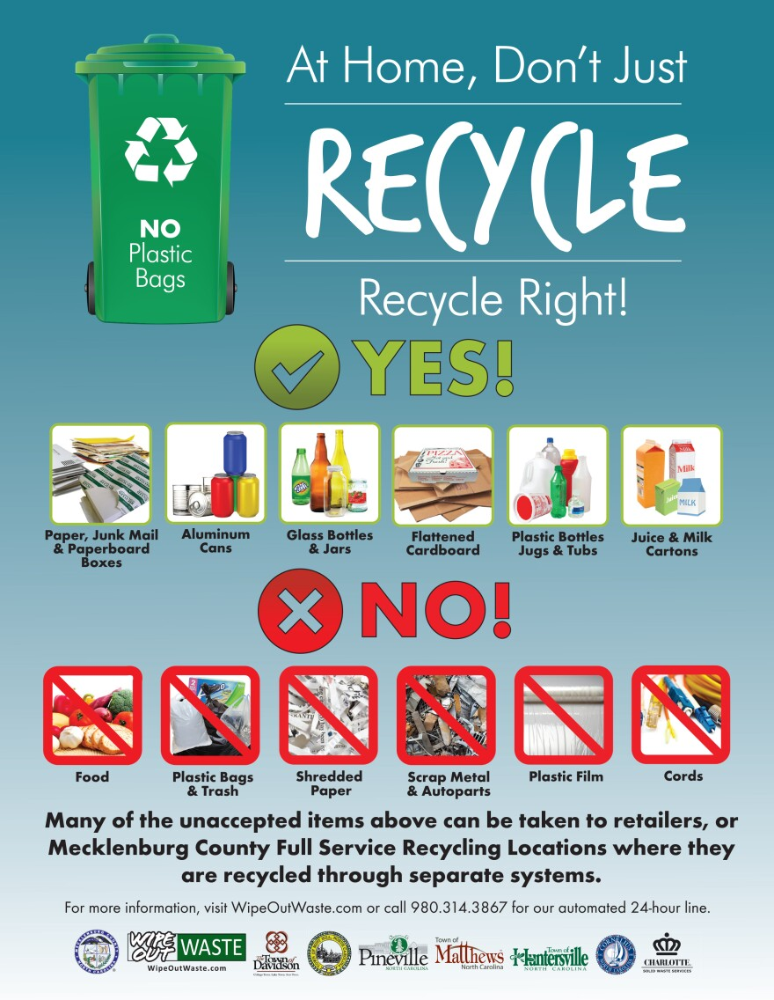
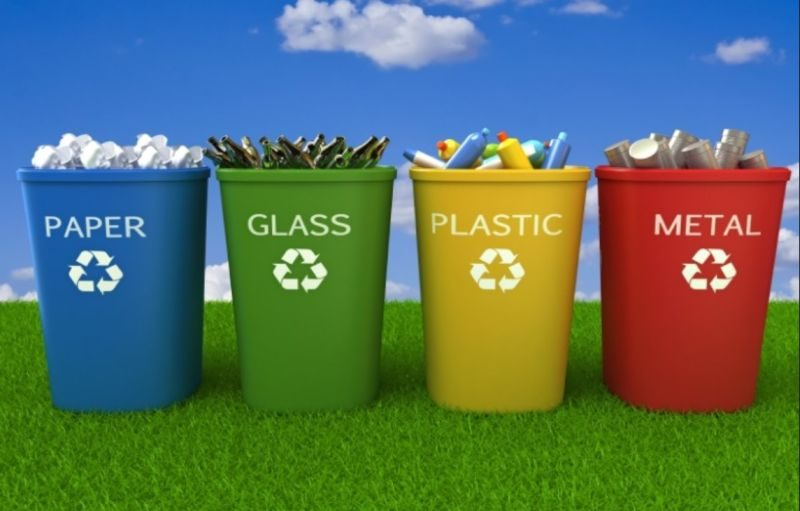
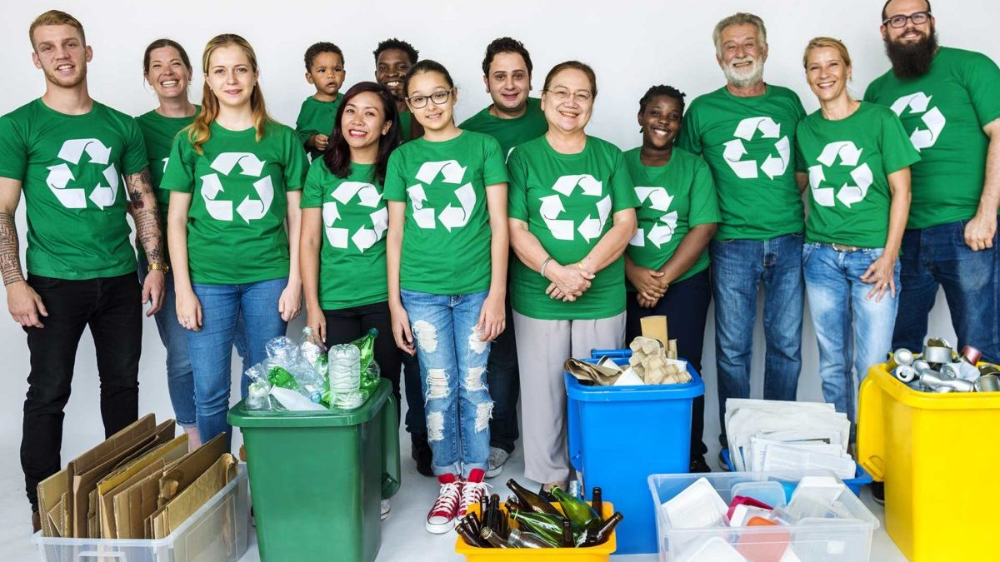

Why is recycling important?
In simple terms, recycling plays a crucial role in conserving resources, protecting the enviroment, and promoting sustainability for future generations. By particpating in recycling efforts, individuals and communities can make a positive immpact on the planet and support a more sustainable way of living.
Steps to recycling.
- Reduce waste by using reusable products.
- Separate recyclable materials such as paper, plastic, glass, and metal.
- Check your local recycling guidelines for specific instructions.
- Rinse out containers before recycling to avoid contamination.
- Place recyclables in the designated recycling bin.
- Support recycling programs in your community.





